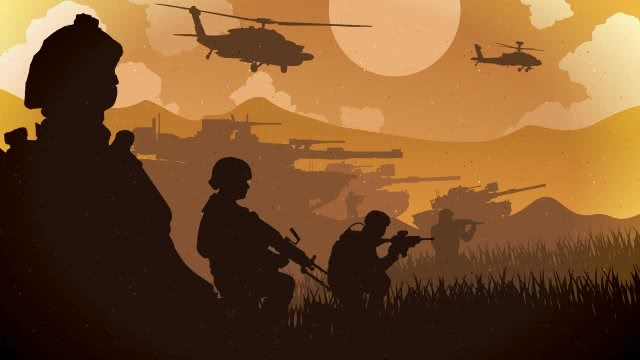
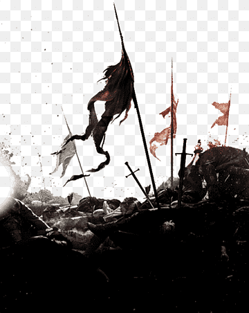

Una guerra es una de las formas más extremas de conflicto entre seres humanos. Se trata de un enfrentamiento organizado y violento entre grupos, que normalmente son países o estados, aunque también puede ocurrir entre facciones dentro de un mismo territorio. A lo largo de la historia, las guerras han sido utilizadas como un medio para resolver disputas cuando fallan las vías pacíficas como la diplomacia o la negociación. En una guerra no solo participan soldados; también se ven involucrados civiles, economías completas y sistemas políticos. Además, la tecnología ha transformado profundamente la forma en que se libran las guerras: desde combates cuerpo a cuerpo en la antigüedad hasta el uso de drones, armas nucleares y ciberataques en la actualidad. Esto ha hecho que los conflictos sean cada vez más complejos y, en muchos casos, más destructivos.
Las guerras no surgen de la nada; generalmente son el resultado de tensiones acumuladas durante años o incluso décadas. Una de las causas más comunes es la disputa por territorios. Cuando dos países consideran que una región les pertenece, pueden escalar el conflicto hasta llegar a la violencia armada. Otra causa importante son las diferencias ideológicas. Un ejemplo claro es la Guerra Fría, en la que dos grandes bloques mundiales defendían sistemas políticos y económicos opuestos. Aunque no fue una guerra directa entre las principales potencias, generó múltiples conflictos indirectos en diferentes partes del mundo. El acceso a recursos naturales también ha sido una causa recurrente. El petróleo, el agua y otros recursos estratégicos son fundamentales para el desarrollo de los países, y su control puede generar tensiones muy fuertes. Asimismo, el nacionalismo puede jugar un papel clave, ya que el deseo de expandir el poder o proteger la identidad nacional puede llevar a decisiones agresivas. Finalmente, las diferencias religiosas o culturales han provocado conflictos a lo largo de la historia, como ocurrió en las Cruzadas, donde factores religiosos y políticos se combinaron para desencadenar guerras prolongadas.
Existen diferentes tipos de guerras según su alcance, sus participantes y sus objetivos. Las guerras mundiales son las más amplias y destructivas, ya que involucran a múltiples países en distintos continentes. La Segunda Guerra Mundial es uno de los ejemplos más impactantes, con consecuencias que aún influyen en la política internacional actual. Por otro lado, las guerras civiles ocurren dentro de un mismo país, cuando grupos internos luchan por el poder o por cambiar el sistema político. Estas guerras suelen ser especialmente complejas, ya que enfrentan a personas que comparten la misma cultura, idioma y territorio. También existen las guerras de independencia, en las que un territorio busca separarse de una potencia dominante para convertirse en un estado soberano. En la actualidad, han surgido nuevas formas de conflicto conocidas como guerras híbridas, que combinan enfrentamientos militares tradicionales con estrategias como la desinformación, los ataques cibernéticos y la presión económica.

Las consecuencias de las guerras son profundas y afectan a todos los niveles de la sociedad. En primer lugar, están las pérdidas humanas, que incluyen no solo a soldados sino también a civiles inocentes. Millones de personas han perdido la vida en conflictos a lo largo de la historia, lo que deja heridas difíciles de sanar. La destrucción material es otra consecuencia importante. Las ciudades pueden quedar completamente devastadas, y la reconstrucción puede tardar décadas. Además, las economías suelen colapsar debido al alto costo de la guerra, lo que genera pobreza, desempleo e inestabilidad. Otro efecto significativo es el desplazamiento de personas. Muchas familias se ven obligadas a abandonar sus hogares para escapar de la violencia, convirtiéndose en refugiados. Esto genera crisis humanitarias que afectan a regiones enteras. En respuesta a los horrores de las guerras, se han creado organizaciones internacionales como la Organización de las Naciones Unidas, cuyo objetivo es promover la paz y evitar nuevos conflictos a gran escala.
A pesar de los avances en la diplomacia y la cooperación internacional, la guerra sigue siendo una realidad en el mundo. Esto plantea una pregunta importante: ¿es la guerra inevitable o puede la humanidad encontrar formas de resolver sus conflictos sin recurrir a la violencia? Muchos expertos creen que la educación, el diálogo y la cooperación entre países son claves para reducir los conflictos. Sin embargo, mientras existan intereses opuestos, desigualdades y luchas por el poder, siempre habrá riesgo de guerra. Comprender las causas, los tipos y las consecuencias de las guerras es fundamental para analizar la historia y también para reflexionar sobre el presente. Solo a través de este entendimiento es posible trabajar hacia un futuro en el que los conflictos se resuelvan de manera pacífica.
